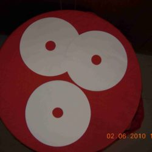

Our Products
Qualitative Filter Papers
We offer three different qualities of filter paper for qualitative filtration. The variants are:
Filterking Filter Paper: This paper is made from most premium virgin pulp. The quality is consistent batch after batch. This filter paper can replace Whatman No.1. We suggest that one must test Filterking vis-à-vis Whatman No.1.
Filterman Filter Paper: Another qualitative filter paper can compete with any other pulp based filter paper.
Filterex Filter Paper: This environment friendly filter paper is machine-made and is a substitute to hand made filter paper. Our filter paper is as economical as handmade paper, but provides better performance than handmade filter paper.
Sizes: 5 cm, 7 cm, 9 cm, 11 cm, 15 cm, 24 cm, 30 cm, 32 cm.
Sheet Form: 46 x 57 cm, 63 x 63 cm
Customized sizes are available on special request


Filter Paper for Electroplating
Most of the leading Electroplaters in India today are using our filter paper. Our filter paper is CUT TO SIZE for electroplating. This has many advantages, resulting in savings. Some of the areas where it would result in savings are:
Manpower: No need to put resources to cut the paper.
Expensive Chemicals: Proper pore size ensures that required impurities are filtered out. The perfect fit paper ensures no unfiltered electrolyte passes through.
Efficient Filtration: This paper is made using fresh and right grade of pulp to ensure perfect construction of paper.
Improved Quality:All the qualitative inputs ensure that you get batch after batch perfect filtration. This results in reduced faults in electroplating.
Filterking Filter Paper/Filterman Filter Paper–For replacement of hand-made filter paper Filterex Filter Paper – Pure pulp based filter papersm
We also provide pure pulp based, filter pads for very fine filtration in Electroplating.